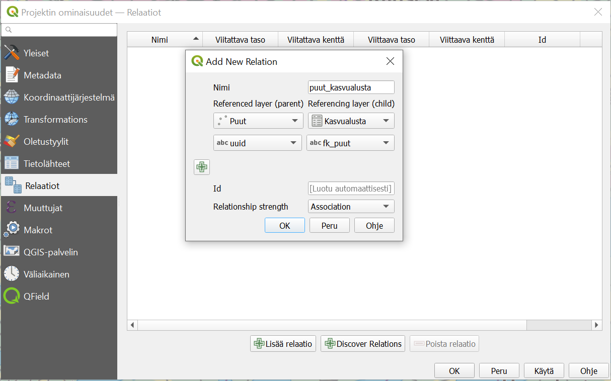
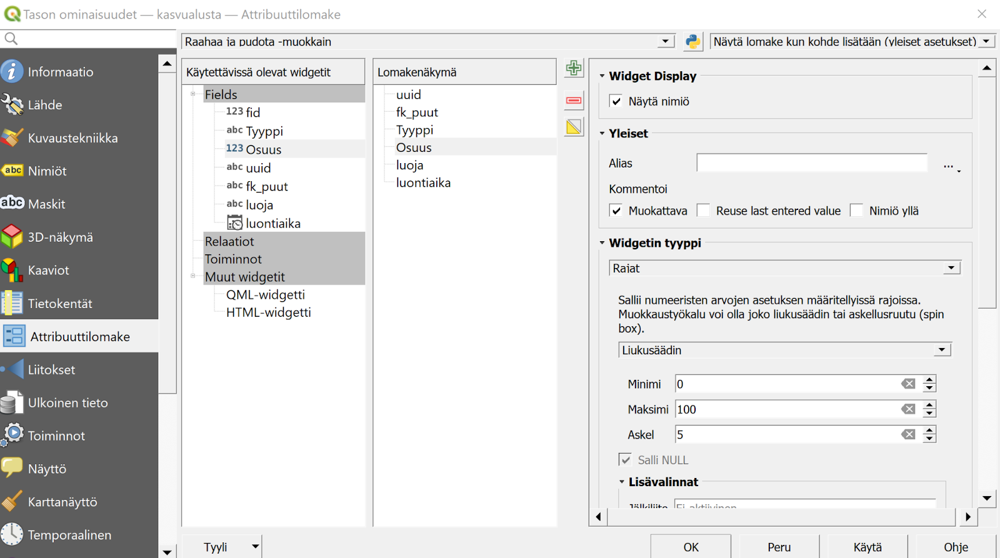
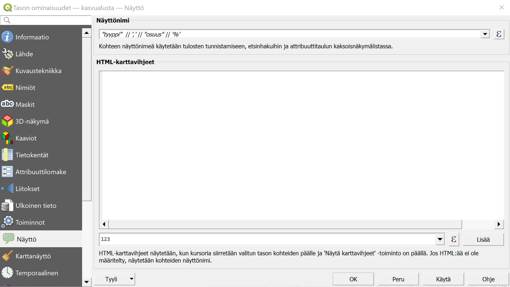
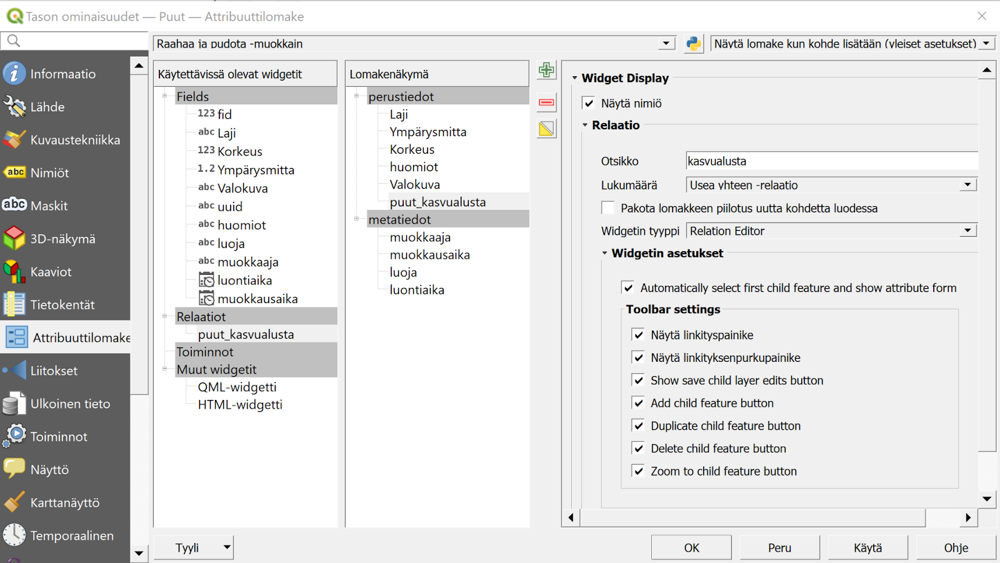
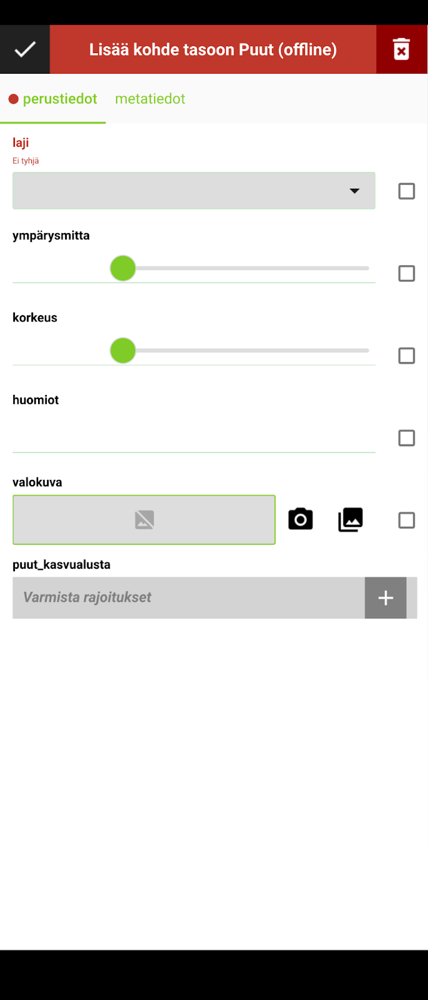
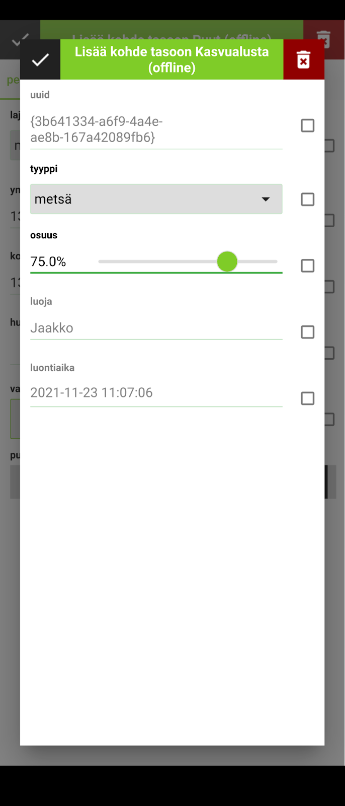
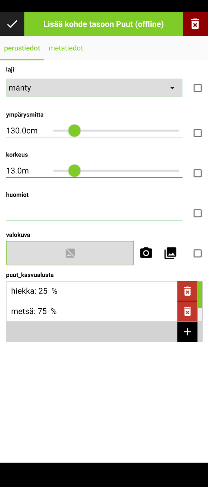

5 Harjoitus 4: Relaatioiden käyttö
5.0.1 Harjoituksen sisältö
Harjoituksessa luodaan QGIS-projektiin uusi Kasvualusta-taso, jonka avulla kerättäviin Puut-tason kohteisiin lisätään tietoa näiden kasvupaikasta. Tasojen välille luodaan relaatio, jonka avulla kyseinen vanhempi-lapsi -suhde saadaan kohteille rakennettua.
5.0.2 Harjoituksen tavoite
Koulutettava oppii määrittelemään relaatioita tasojen välille QGISin projektin asetuksia käyttäen ja ottamaan tässä huomioon QFieldin ja mobiilikeruun ominaispiirteet.
5.0.3 Arvioitu kesto
30 min
5.1 Valmistautuminen
Avaa QGIS tietokoneellasi ja avaa siellä aiemmin luomasi QGIS-projekti (Projekti > Avaa), siirry oikeaan kansioon, valitse projektitiedosto (“QField-kurssiprojekti”) ja paina Avaa.
5.2 Kasvualusta-taso
Luodaan nyt uusi taso, joka mahdollistaa yhden tai useamman tiedon (ns. lapsi-kohde/child) liittämiseen kuhunkin Puut-tason kohteeseen (vanhempi-kohde/parent). Kerätään siis puulajien lisäksi summittaista tietoa näiden kasvupaikoista, esimerkiksi maanpinnan koostumuksesta n. 5 metrin säteellä rungosta. Koska tämän säteen sisällä maanpinta voi koostua useammanlaisesta aineksesta, voi yhteen puuhun täten liittyä useampi tämän uuden tason kohde.
Lisätään muut tasot sisältävään GeoPackageen uusi taso (Tasot > Luo Taso > Uusi GeoPackage-taso… ). Kuten ennenkin, navigoidaan nyt Tietokanta-kohdasta aiemmin luotu Puu-inventointi -GeoPackage-tietokanta. Muutetaan nyt taulun nimeksi Kasvualusta, geometriatyypiksi Ei geometriaa, sillä sillä ei ole tässä merkitystä (kaikille samanlainen 5 m ympyrä). Ominaisuustietokentiksi voimme määrittää tyyppi (teksti), osuus (integer), uuid (teksti), fk_puut (teksti), luoja (teksti) sekä luontiaika (päivämäärä ja aika). Paina sitten OK. Esiin ponnahtaa jälleen ikkuna, jossa ilmoitetaan tiedoston jo olevan olemassa ja kysytään mitä sillä halutaan tehdä. Kuten ennenkin, valitse Lisää uusi taso, jolloin samaan GeoPackage-tietokantaan lisätään uusi taso.
5.3 Relaatioiden luonti
Mene QGISin päävalikosta Projekti > Ominaisuudet… välilehdelle Relaatiot ja luo siellä relaatio kohdasta Lisää relaatio (vihreästä plus-kuvake). Anna relaatiolle kuvaava nimi, esimerkiksi puut_kasvualusta ja seuraavat kuvanmukaiset asetukset:
Referenced layer (parent): Puut
Referenced field: uuid
Referencing layer (child): Kasvualusta
Referencing field: fk_puut
Relationship strength: Association
Paina OK ja uudelleen OK sulkeaksesi projektin ominaisuudet saattaaksesi asetukset voimaan.

5.4 Lomakkeen asetusten määrittäminen
Määritetään nyt miten Puut-tason kohteisiin liitettävien Kasvualusta-tason tiedot syötetään. Klikkaa siis QGISissa Kasvualusta-tason kohdalta hiiren oikealla näppäimellä ja valitse Ominaisuudet… ja sieltä Attribuuttilomake-välilehti. Valitseylhäältä pudotusvalikosta Drag and Drop Designer (suom. Raahaa ja pudota -muokkain). Muokkaa lomaketta siten, että Lomakenäkymä-kohtaan tulee vain kuvassa näkyvät kentät, eli tyyppi, osuus, luoja sekä luontiaika. Näiden kenttien syöttötavat ovat hyvin samantapaisia kuin ne, joita olemme käsitelleet jo aikaisemmin.

Määritä näiden jäljelle jäävien kenttien syöttötavat siis seuraavasti:
Tyyppi: arvoluettelo, jossa arvoja esimerkiksi metsä, hiekka, rakennettu, muu
Osuus: Rajat-widget liukusäätimellä (kts. kuva yllä). Tämä viittaa kunkin kasvualustatyypin prosentuaaliseen osuuteen
Luoja ja luontiaika: kuten Puut-tason lomakkeelle
uuid (Käytettävissä olevat widgetit -sarakkeessa): muuta ei-muokattavaksi ja aseta oletusarvoksi funktio uuid()
fk_puut: tälle ei tarvitse tässä tehdä muutoksia
Lisätään vielä Kasvualusta-tason kohteillekin tunniste QFieldin kohdelistausta varten. Mene siis vielä Tason ominaisuudet -ikkunassa Näyttö-välilehdelle, ja kirjoita lauseke, jossa on yhdistetty kasvualustan tyyppi ja osuus. Katso alla olevasta kuvasta mallia. Paina tämän jälkeen OK.

Lisätään puut_kasvualusta -relaatio vielä Puut-tason attribuuttilomakkeeseen kuvan mukaisesti. Eli avaa Puut-tason ominaisuudet, ja raahaa Attribuuttilomake-välilehden Drag and Drop Designer -näkymässä käytettävissä olevista widgeteistä lomakenäkymä-sarakkeen perustieto-välilehden viimeiseksi kentäksi:

Paina lopuksi OK. Tallenna myös projekti (Projekti > Tallenna). Pakkaa ja synkronoi muokattu projektitiedosto jälleen QField Sync -lisäosalla. Konfiguroi nyt lisätty Kasvualusta-taso kuten aiemmatkin tasot (Offline). Siirrä lisäosan pakkaama kansio lopuksi mobiililaitteeseen. Kun olet valmis, tallenna projektitiedosto kurssihakemistoon pikanäppäimellä CTRL + T tai päävalikosta Projekti > Tallenna.
5.5 Lapsikohteiden luominen QFieldissä
Avaa jälleen kurssiprojekti viimeisine muutoksineen QFieldissä. Luodaan nyt Puut-tasolle uusi kohde, jolle lisätään lapsikohteena tietoa kasvualustasta. Aktivoi digitointitila QFieldissä ja valitse Puut-taso. Digitoi tasolle uusi piste. Attribuuttilomakkeen ilmestyessä huomaat, että perustiedot-välilehdelle on ilmestynyt puut_kasvualusta -valinta, joka on mahdollista aktivoida täytettyäsi vaadittavat tiedot Puut-tasolle lisättävästä kohteesta. Täytä tarvittavat tiedot, ja lisää digitoimallesi puulle sen kasvualustatyyppi / -tyypit. Huomaa, että voit lisätä monta eri lapsikohdetta, tässä tapauksessa kasvualustatyyppiä.


